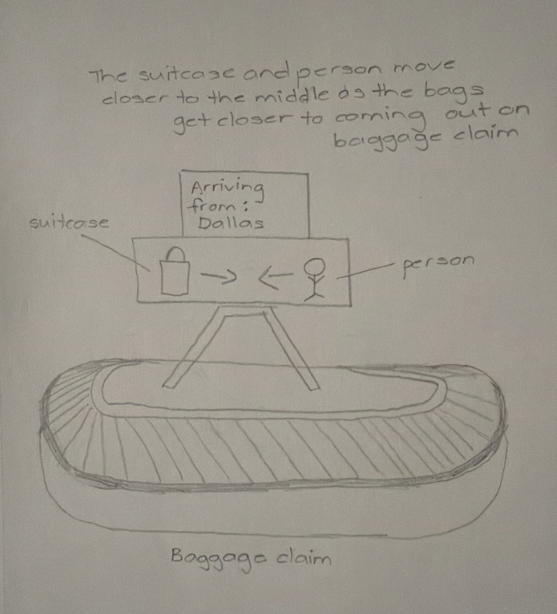
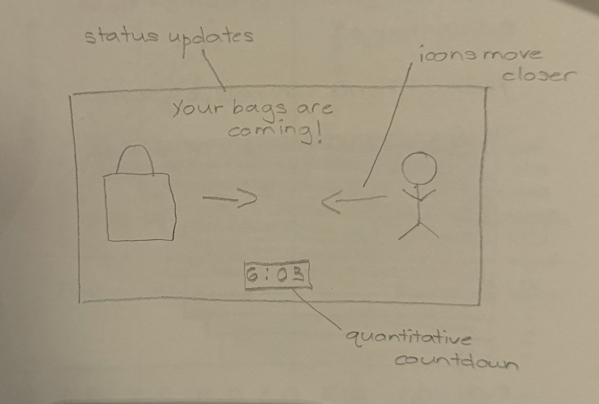
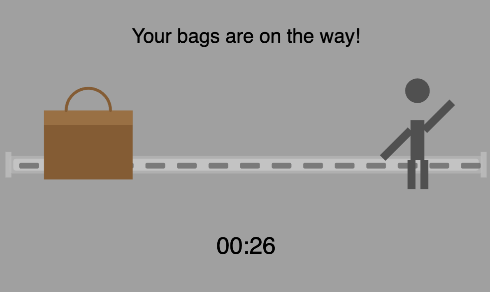
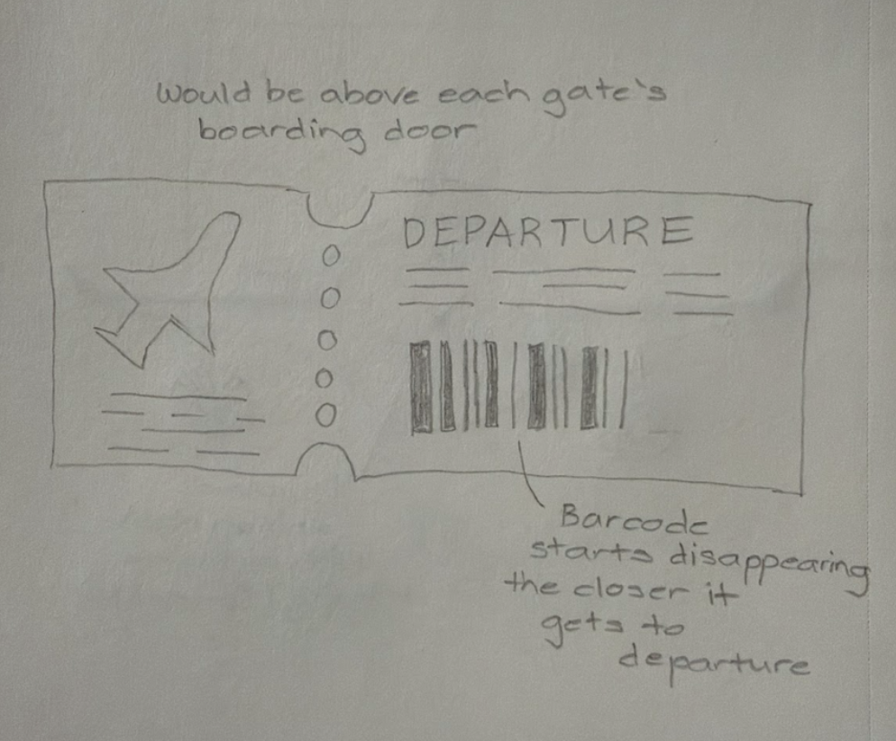
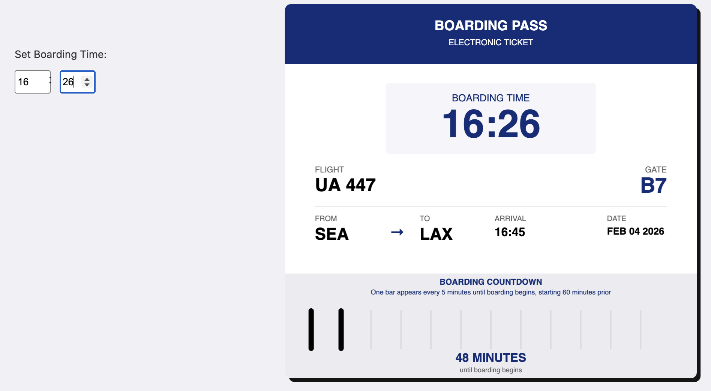
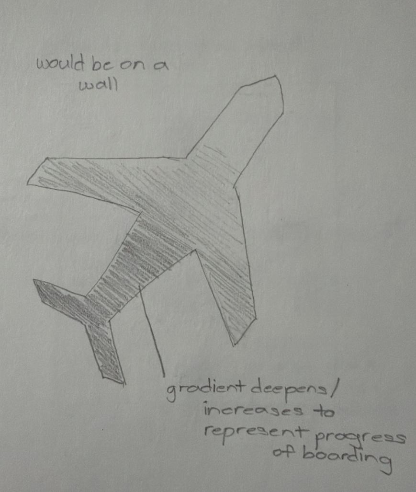

Context: This clock is meant to be used by people at airports who are waiting for their bag(s) to arrive at baggage claim.
There is currently no way to track baggage arrival in real-time.
Design decisions: I chose to illustrate the suitcase and the person icon moving towards eachother
to reflect the reality of what occurs at baggage claim. Seconds are counted down as the two icons get closer together.
I decided to have the icons move in a smooth, fluid motion to depict the natural flow of baggage claim. The dark gray
background helps to highlight the moving elements by creating contrast, and turns green to indicate when bags are on the
carousel. The written status text and countdown timer makes the visualization more understandable for those who are standing
a considerable distance away from the carousel.
Future work: This clock could be improved by incorporating more detailed animations, such as having
the person icon 'dance' or do some kind of motion when they receive their bag, or adding sound effects to indicate when
bags are about to arrive. It could also be useful to add more status update texts, such as "Your bags have been transferred
off of the tarmac." This would help users understand the baggage claim process more clearly and alleviate impatience. A more
technical improvement would be to figure out how this clock would actually be implemented at the airport. Right now it starts at
30 seconds, but maybe having some location tracking feature on the actual bags would be more useful for people.
Sketch evolution

Step 1 — For my first sketch, I drew a rough idea of the clock I had in mind. In this first iteration, I drew the entire baggage claim
carousel, so that it is clear what context the clock is meant for and where it would be found. This sketch also includes information about which
flight the user is waiting for to make the clock more personalized and informative.

Step 2 — After receiving helpful feedback from my peers in class, I got started on my second iteration of the clock. This time, I decided not to
include the entire carousel, and instead just focus on the clock itself. I added a countdown timer to make the clock more informative, as someone in
class mentioned it would be helpful. I also added status text to indicate when the bags are on the way and when they are on the carousel.

Step 3 — In the final version of the clock, I got to implement all of the feedback I received in class. I prototyped the countdown timer and the status
updates, and added more detailed animations to make the clock more engaging. I also made some design adjustments, such as changing the background color to make the
moving elements more visible, and making the icons move in a smoother way to make the animation more fluid. I received more feedback that it would be helpful to have a
more obvious indicator that bags are here, so I made the background turn green. I am happy with how the clock turned out, and I think it is a fun and informative way to
make the baggage claim experience more enjoyable for travelers.
Sketch narrative
Context: This clock is meant to be used by people who are at the airport, waiting to board their flight.
Waiting can be a long, annoying process, so the goal of this visualization is to add more fun to the experience.
Design decisions: Since the purpose of the clock is to countdown time until boarding, I decided to center
the boarding time prominently on the boarding pass, in the middle, for easy visibility. Other information about the flight (flight number,
gate, from/to) is placed around it for context. The visualization starts an hour before boarding, and each bar represents 5 minutes.
I included text about the countdown, including what each bar represents and when the countdown starts, for users to understand it better.
I also made it interactive by allowing users to set their own boarding time so that they can test out the prototype and see
how the bars appear.
Future work: One possibility for future work is to add more elements that encode time, rather than just the bars that
each represent 5 minutes. Having a visual to depict seconds could make the countdown more precise and engaging. Another improvement is to
make the barcode more prominent, possibly by increasing its size, adding animation effects, or moving it to the middle of the boarding pass.
Sketch evolution

Step 1 — In this first sketch, I drew the rough outline of a boarding pass with the image of a plane on the left
and a barcode on the right, which disappears the closer the boarding time appears. I included 12 bars to represent the hour before boarding,
and I annotated the sketch with some design decisions about how I intend for this visualization to be placed at each airport gate.
Step 2 — After receiving lots of good peer feedback, I adjusted the layout to improve clarity and usability. Specifically, I highlight the
boarding time by placing it in the middle and making it larger, and I added text to explain how the bars work. I also made the barcode more prominent by
increasing its size and moving it to the middle of the boarding pass. The main difference in this sketch is that the bars actually appear as boarding time approaches,
rather than disappearing. This is because I received feedback that it would make more sense for the barcode to be complete at boarding, since that's what people use to
actually board.

Step 3 — In this final version, I implemented the idea of having the barcode appear instead of disappear. I also added an explicit countdown at the bottom, so that
users can easily see how much time is left until boarding. To make it interactive, I added a feature where users can set their own boarding time (hours and minutes)to test out the prototype.
Sketch narrative
Context: This clock is for people who are waiting for their boarding group to be called at the airport. It counts
down the time until their group is called in a quantitative and visual (gradient) manner.
Design decisions: I decided to visualize the plane being filled up by the gradient because it is an accurate description
of the boarding process– the more groups that are called, the more filled the plane is. Each group is given 7 minutes to board, and the
time remaining is displayed below the boarding group name to keep users informed. I also decided to include an interactive element, where users
can click their mouse to skip to the next boarding group. The bottom of the visualization also displays the overall boarding progress as a percentage,
so those waiting can easily see how much of the boarding process is complete.
Future work: This clock could be improved by finding a way to make the gradient that fills the plane be more accurate, and actually
fill the complete outline. I was trying to figure out how to do this but ran into some challenges with the shape complexity, and also the fact that I am new
to p5.js and interactive visualization. Another, more technical, improvement could be related to how this clock would actually be implemented. Rather than
defaulting to 7 minutes for each boarding group, it could dynamically adjust based on real-time data or user input to provide a more accurate countdown.
Sketch evolution

Step 1 — In my first sketch, I drew the outline of a plane and partly filled it with a gradient to represent the boarding process. The idea was,
the further along the gradient fills, the more groups have boarded. I thought this was an intuitive way to visualize the boarding process.
I also included annotations about how the boarding groups work and how the clock would be used at the airport.
Step 2 — In class, I received very helpful feedback on this visualization, which I really appreciated because it was the one
I was most unsure about. I got feedback that the gradient was a bit hard to understand, and it wasn't clear how it related to the boarding process.
I also got feedback that it would be helpful to have more explicit information about the boarding groups and the time remaining for each group.
Based on this feedback, I made some adjustments to the design. I added text to indicate which boarding group is currently boarding, and I included a
countdown timer to show how much time is left for that group.
Step 3 — In the final version, I worked on refining the UI so that it looks more like something that would be found in an airport. To do this,
I used dark blue, and black, making it easy to read and visually similar to the signage found at airports. I also added an interactive element, where users
can click their mouse to skip to the next boarding group. This allows users to test out the prototype and see how it would work in real life. In a real-world implementation,
this feature would be used so that airport staff can skip to the next boarding group if the previous took less than 7 minutes to board.